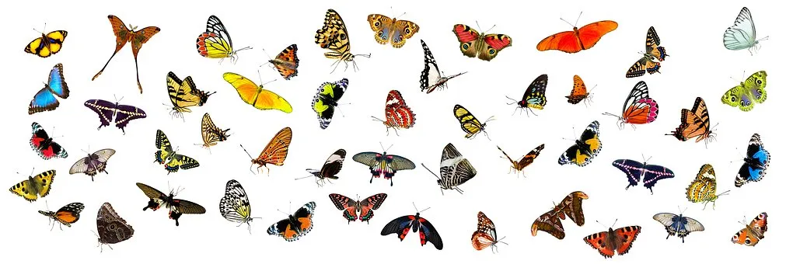
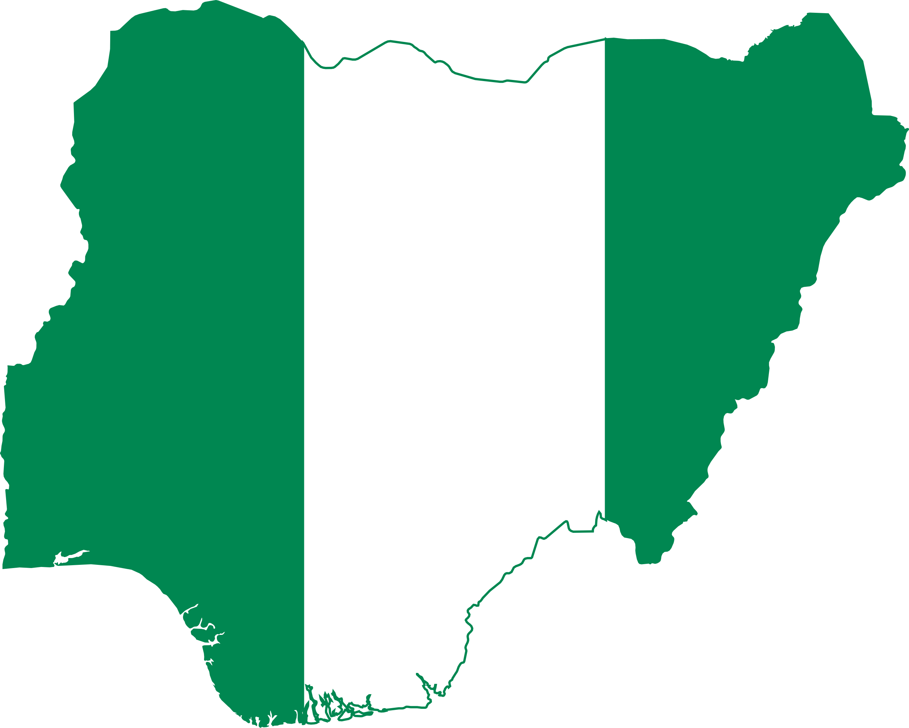

Cool Facts
Here are some facts I found interesting about Nigeria
Nollywood
Nigeria's film industry, is one of the largest globally producing thousands of films annually since its rise in the 1990s with hits like Living in Bondage. It explores themes like love, family, corruption and tradition. Often in English or indigenous languages like Yoruba and Igbo. Known for quick, low-budget productions, Nollywood has recently improved quality with films like Lionheart gaining global recognition on platforms like Netflix. The industry is a major economic driver employing millions and showcasing African stories to the world.
Oil Wealth
Nigeria’s oil wealth, discovered in 1956, is central to its economy making it Africa's largest oil producer. Oil accounts for over 90% of export earnings and government revenue. Most production occurs in the Niger Delta but the region faces poverty, environmental degradation and oil theft. Despite generating billions oil wealth has been marred by corruption and mismanagement. Efforts are underway to diversify the economy away from oil dependency, though it remains a key economic driver.
Butterflies
Nigeria is famous for it's beautiful and diverse butterflies. Nigeria has an exceptional biodiversity and boasts an abundance of fauna and flora. Presently, there are over 1000 documented species of butterflies. New species are still being discovered.
Compostion of flag
The Nigerian flag is a vertical bicolour triband of green, white and green. The two green stripes represent Nigeria's natural wealth, while the white band represents peace. It was designed in 1959 by Michael Taiwo Akinkunmi and was officially adopted on October 1, 1960.
